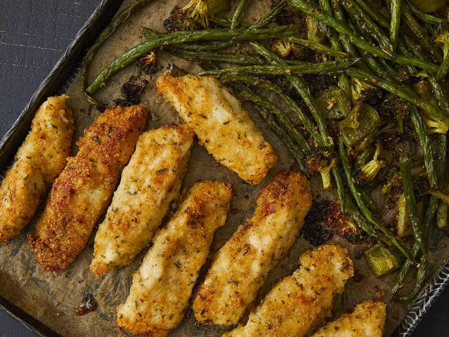

Hoja Panparmesano chiken y Veggies

Descripción
Esta cena de pollo y verduras de hoja extra-espía es horneada en una sartén y empaquetado con sabor.
Ingredientes:
- 1 cucharada de orégano seco
- 1 cucharada de perejil seco
- 1 cucharada de pimientón
- 1 o 2 cucharadas de ajo en polvo
- 1/4 de cucharada sazonada sal a gusto
- 1/4 de cuchaco de pimienta negra molida, a gusto
- Frijoles verdes frescos de una libra,recortados
- 1 patata roja pequeña,picada
- 1 pimiento dulce,picado
- 1 taza de flores de brócoli, picado
- 1 cucharada de ajo picado
- 3 cucharadas de aceite de oliva
- 1 o 3 tazas de harina uso general
- 4 cucharadas de mantequilla,derretida
- 1 taza de migas de pan
- 1 taza de queso parmesano recién rallado,dividido
- 1 kilo de 1 a 2 libras sin piel, pechugas de pollo deshuesadas,golpeadas planas y sobradas de grasa removida
Instrucciones de preparación
-
Precalentar el horno a 400 grados F (200 grados C). Forrar una sartén con papel pergamino.
- Combine orégano, perejil, pimentón, polvo de ajo, sal sazonada y pimienta en un tazón pequeño.
- Coloque frijoles verdes, papa, pimiento, brócoli y ajo en la sartén preparada. Espole, con aceite de oliva y espole, con la mitad de la mezcla de condimentos; mezcle a la capa.
- Coloca la harina en un tazón. Coloca la mantequilla derretida en un segundo tazón. Mezcla panko, 2/3 taza de queso parmesano, y el condimento restante se mezclan en un tercer tazón.
- Cortar el pollo en 1 1/4-herbras de estrigas, luego cubrir en harina. Tiras enharinadas en mantequilla derretida, goteo de mantequilla sobrado en el tazón. Presione la mezcla parmesano-panko hasta que esté fuertemente recubierta en ambos lados.
- Empuje las verduras a la mitad de la sartén. Coloque tiras de pollo recubiertas en el otro lado. Espoleja cualquier mezcla parmesana-panko sobre pollo, presionando para adherirse.
- Hornee en el horno precalentado durante 10 minutos. Voltear tiras de pollo y agitar verduras, luego continuar hornear hasta que los jugos de pollo corra y las verduras sean crujiente, 10 a 15 minutos más. Un termómetro de lectura instantánea insertado en el centro del pollo debe leer al menos 165 grados F (74 grados C).
- Mientras tanto, haga la salsa de inmerjo: mayonesa Whisk, ketchup, polvo de ajo y salsa de Worcestershire juntos en un taco pequeño.
- Retire el pollo y las verduras del horno. Lazse las verduras con la queso parmesano restante de 1/3 taza. Servir con salsa de inmerjo.